Content workflow highlight: Assigning content to a custom navigation item
Introduction
In this lab, you will switch to the ViewApp Editor to customize the ViewApp navigation. You will rename some of the existing navigation items, add new ones, and configure references and other properties for the navigation items. Then you will test the navigation in a running ViewApp.
Objectives: Upon completion of this lab, you will be able to:
Edit existing navigation items
Add new navigation items
Configure navigation item properties
Rearrange custom navigation items
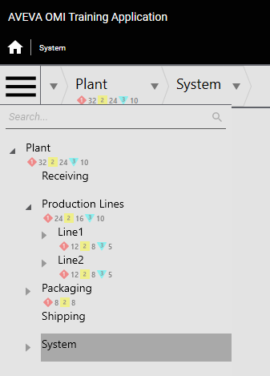
The AVEVA OMI Training Application with the initial navigation tree showing Plant and System sections
Edit Navigation Items
In the following steps, you will edit the navigation model for your ViewApp.
In the ViewApp Editor, in the Navigation list on the left, select Assets and click in the name. The name of the navigation item becomes editable.
Enter Plant and press Enter to rename the navigation item.
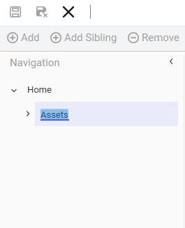
Step 1: Assets is selected and in editable state
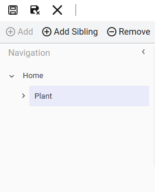
Step 2: The item has been renamed to Plant
On the Properties tab, next to the Navigation \ Reference property, click the down-arrow and browse to and select Model\Plant. The Include Children option appears and is checked.
Uncheck Include Children. A message appears indicating that the selected item and its children will be replaced by a new hierarchy.
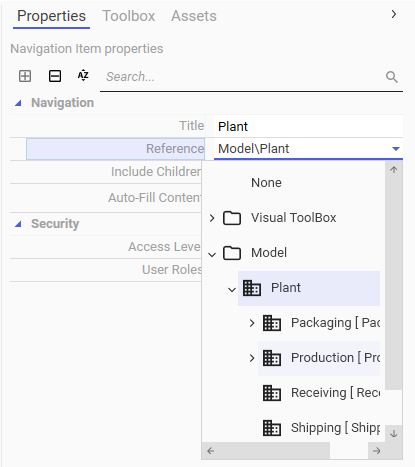
Step 3: Selecting Model\Plant from the Reference dropdown
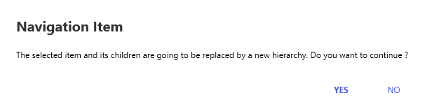
Step 4: Confirmation dialog when unchecking Include Children
Click Yes to continue. Include Children is unchecked.
With Plant selected in the Navigation list, click Add to add a new navigation item. A new navigation item is added as a child of Plant.
Rename the new navigation item to Receiving.
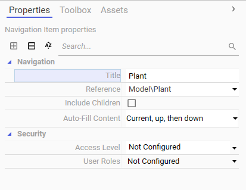
Step 5: Include Children is unchecked after confirmation
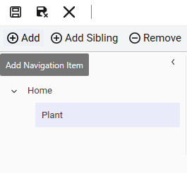
Step 6: Clicking Add to create a child item under Plant
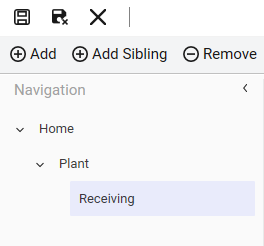
Step 7: The new child item is renamed to Receiving
On the Properties tab, next to the Navigation \ Reference property, click the down-arrow and browse to and select Model\Plant\Receiving.
With Receiving selected in the Navigation list, click Add Sibling to add a sibling navigation item. A sibling navigation item is added.
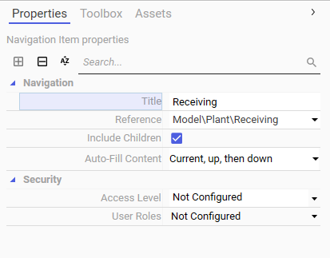
Step 8: Setting the Reference for Receiving to Model\Plant\Receiving
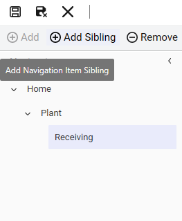
Step 9: Clicking Add Sibling to create a peer item at the same level as Receiving
Rename the sibling navigation item to Production.
With Production selected in the Navigation list, on the Properties tab, set the Navigation \ Reference property to Model\Plant\Production.
Uncheck Include Children and click Yes to continue.
On the Properties tab, change Navigation \ Title to Production Lines.
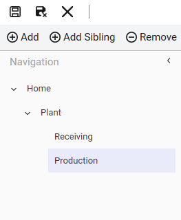
Step 10: The sibling item is renamed to Production
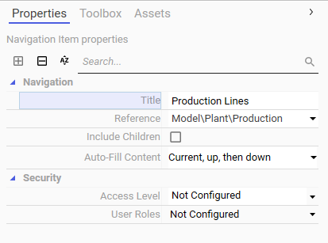
Steps 11–13: Configuring Production Lines with its Reference and title
With Production selected in the Navigation list, click Add to add a child navigation item, and name it Line1.
On the Properties tab, set the Navigation \ Reference property to Model\Plant\Production\Line1.
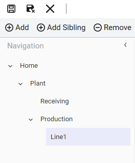
Step 14: Adding Line1 as a child of Production
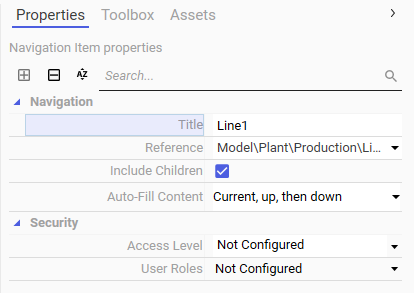
Step 15: Setting the Reference for Line1
Select Production in the Navigation list, click Add to add another navigation item, and name it Line2.
On the Properties tab, set the Navigation \ Reference property to Model\Plant\Production\Line2.
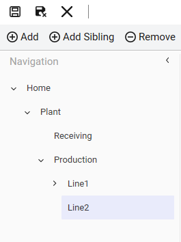
Step 16: Adding Line2 under Production
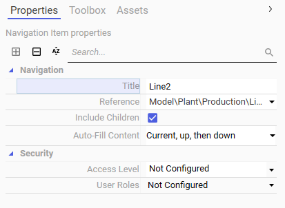
Step 17: Setting the Reference for Line2
In the Navigation list, select Plant, click Add to add a new child navigation item, and name it Packaging.
On the Properties tab, set the Navigation \ Reference property to Model\Plant\Packaging.
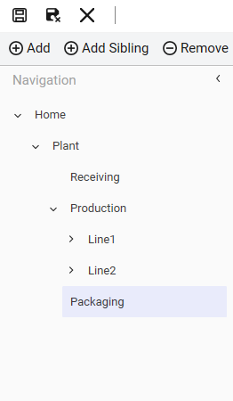
Step 18: Adding Packaging under Plant
Step 19: Setting the Reference for Packaging
In the Navigation list, select Plant, click Add to add a new child navigation item, and name it Shipping.
On the Properties tab, set the Navigation \ Reference property to Model\Plant\Shipping.
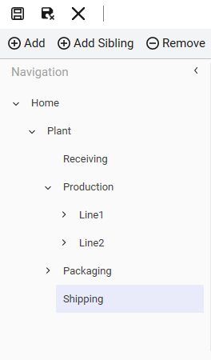
Step 20: Adding Shipping under Plant
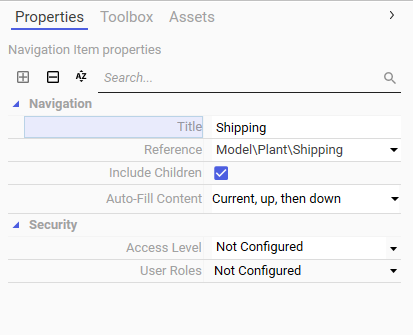
Step 21: Setting the Reference for Shipping
In the Navigation list, select Plant, click Add to add a new child navigation item, and name it Sys.
On the Properties tab, set the Navigation \ Reference property to Model\Plant\Sys.
On the Properties tab, change Navigation \ Title to System.
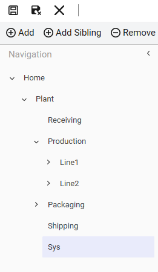
Step 22: Adding Sys under Plant
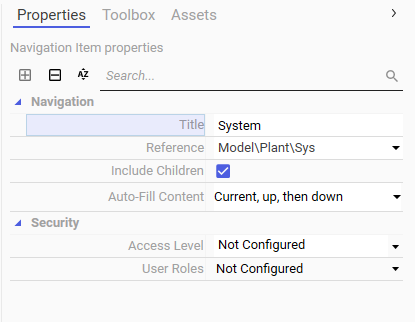
Steps 23–24: Setting the Reference for Sys and renaming its Title to System
Test the ViewApp in a Preview Session
In the following steps, you will update the preview session for the changes you made in the ViewApp Editor. Then you will test the navigation items you configured in this lab.
On the top-right of the ViewApp Editor, click Update to save changes to the ViewApp and update the preview session. The preview session window opens, navigated to System.
Tip: You can maximize the ViewApp preview to optimize the view.
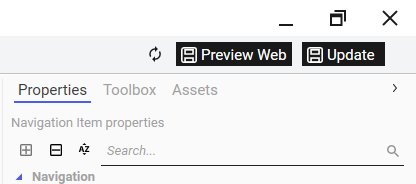
Step 25: Clicking Update to save changes and update the preview session
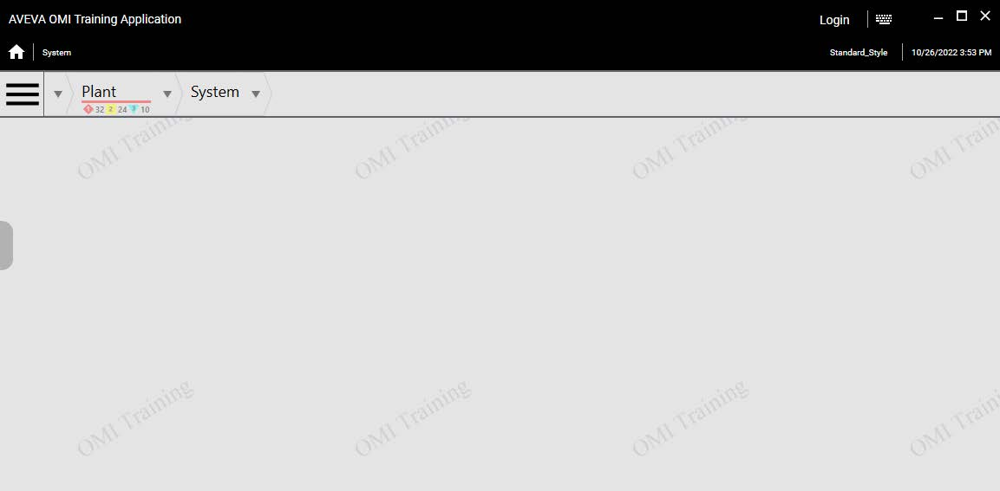
The preview session opens navigated to System
Click the Slide-In Pane button on the left side of the layout to view the navigation tree and review the changes you made in this lab. Notice that the title in the navigation displays as System.
In the Navigation tree, expand Production Lines to see the child items Line1 and Line2 that you added in this lab.
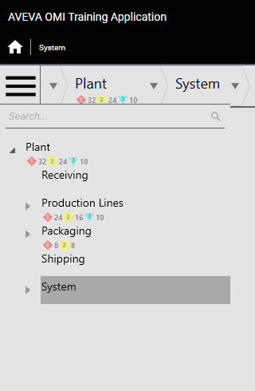
Step 26: Opening the slide-in pane to review the navigation tree changes
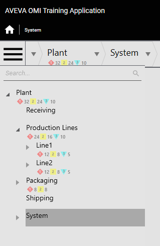
Step 27: Expanding Production Lines to see Line1 and Line2
Navigate to Packaging, and then click the hamburger button to close the slide-in pane. Notice that the updated navigation does not impact the content display. Because we referenced the model for each of our new navigation items, all of the existing content is reused. For example, the Packaging Overview graphic is displayed.
When you are finished testing, minimize the preview session and the ViewApp Editor.
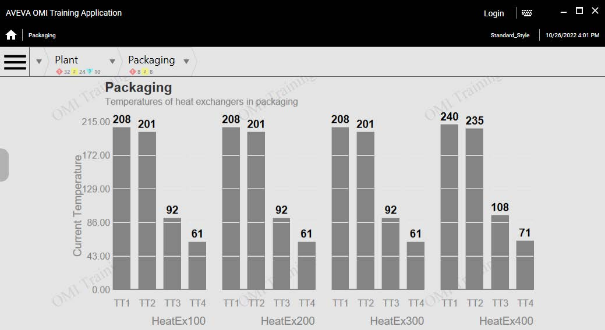
Step 28: Navigating to Packaging shows the Packaging Overview graphic — existing content is reused through model references
Key takeaway: Because each new navigation item references the model hierarchy directly, the existing content and graphics are automatically reused. No additional content assignment was needed for the new navigation items.
Knowledge Check
Q1: What is the first step when renaming a built-in navigation item like Assets?
Select the item in the Navigation list and click in its name to make it editable, then type the new name and press Enter.
Q2: Why do you uncheck Include Children when configuring a navigation item reference?
To prevent the system from automatically replicating the entire asset hierarchy under the navigation item, allowing you to manually add and configure specific child items instead.
Q3: Why does navigating to Packaging still display the correct content after rebuilding the navigation?
Because each navigation item references the model hierarchy directly (e.g., Model\Plant\Packaging), so the existing content and graphics are automatically reused through those model references.